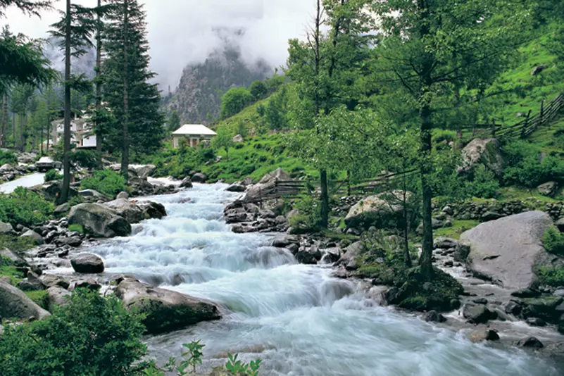
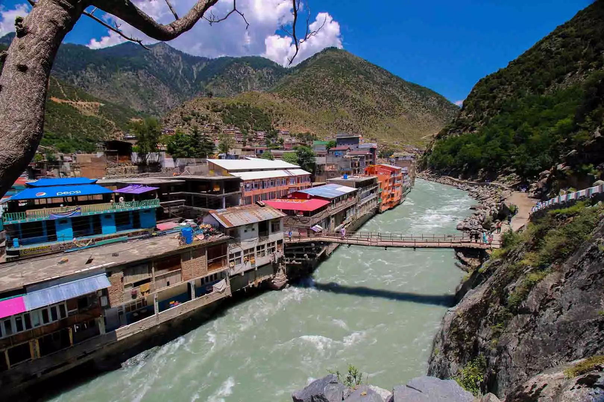
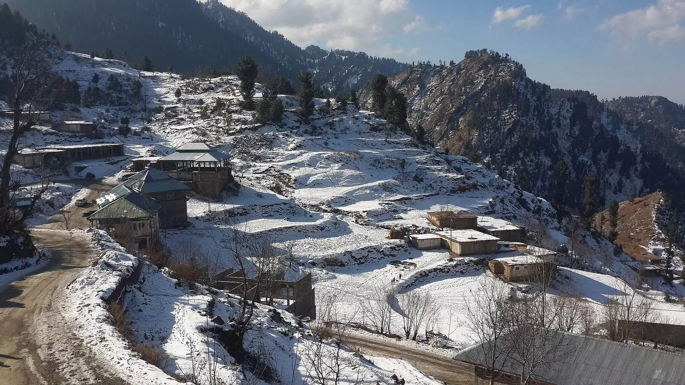

Swat is a District in Malakand Division of Khyber Pakhtunkhwa, Pakistan. Swat remained the center of early Buddhist thought as part of Gandhara Kingdom. Now globally, Swat is the main attraction for tourists of Pakistan. It is bestowed with mountains, rivers, waterfalls, lakes, and much more. Swat is also known as the Switzerland of Pakistan for its beauty. The stunning landscapes with the red hut cottages remind of Switzerland. People visiting Swat Valley get to see the dense deep forest, green alpine meadows, and the roar of Swat River.

The places to visit in Swat Valley are Kalam Valley, Kumrat Valley, Mahodand Lake, Kundol Lake, and Malam Jabba. The Kalam valley is surrounded by lush green hills, forests, waterfalls, and lakes that increase its beauty. It has a dense green Ushu forest that stunned the tourists by its captivating beauty. Kumrat Valley is located in the Upper Dir District and can be reached in one hour from Swat. There is a huge abundance of waterfalls and streams that give an increase to the beauty of Kumrat Valley. People camp at the side of streams and enjoy nature. Kala Chashma, Jahaz Banda, Katora Lake, and Badgoi Pass are the main sightseeing places in Kumrat Valley. Mahodand and Kundol Lake are another masterpiece gift of nature to the Swat Valley. Mahodand Lake is in the Ushu Valley of Kalam. The best time to visit this lake is in summer as the lake is frozen in winter. People enjoy camping, boating and fishing at this lake.

The Kundol Lake is in between the gigantic mountains of Hindu Kush. The snow-clad mountains and lush green forest around the lake increases its beauty. This lake is at the elevation of 9,950 feet and the best time to visit this lake is in summer. In winter, the roads to the lake are blocked due to the heavy snowfall. Tourists enjoy boating and fishing at Kundol Lake.
Malam Jabba is a well-known tourist destination all over the world. It is the most famous hill station in Swat Valley. The road leading to Malam Jabba is dangerously curvy but the adventure seekers don’t bother this and reach their beloved destination every year. People enjoy zipline over here and ski on the mountain. It is declared as the Skier’s Paradise by the skiers who visit Pakistan for the International Alpine Ski Cup.